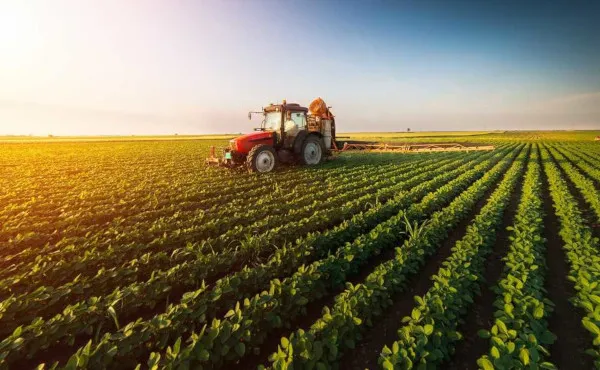
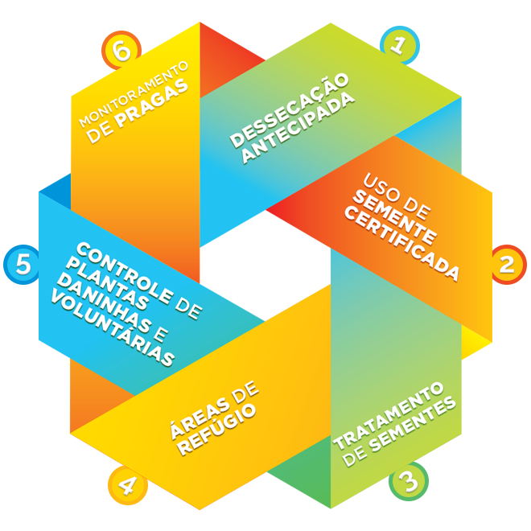
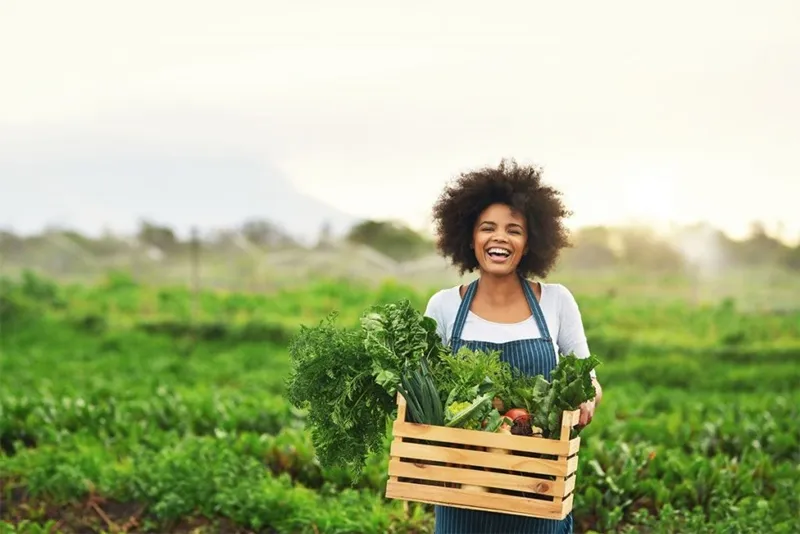

Agricultura sustentável
Conceitos básicos
Agricultura sustentável envolve, de acordo com a FAO (Organização das Nações Unidas para Agricultura e Alimentação), fatores como conservação do solo, da água e dos recursos genéticos animais e vegetais, conservação ambiental e uso de técnicas apropriadas, economicamente viáveis e socialmente aceitáveis.
Práticas agrícolas sustentáveis
Exemplos de práticas agrícolas sustentáveis: Irrigação com sistema de gotejamento, compostagem, rotação de culturas, reflorestamento, controle das queimadas, entre outras.
Agricultura menos prejudicial
Estudos e criação de técnicas que buscam diminuir os impactos ao meio ambiente são cada vez mais comuns, como o reúso da água na agricultura e o incentivo à produção de alimentos e matéria-prima por meio da agricultura orgânica, além do incentivo à utilização de fertilizantes e defensivos biológicos.